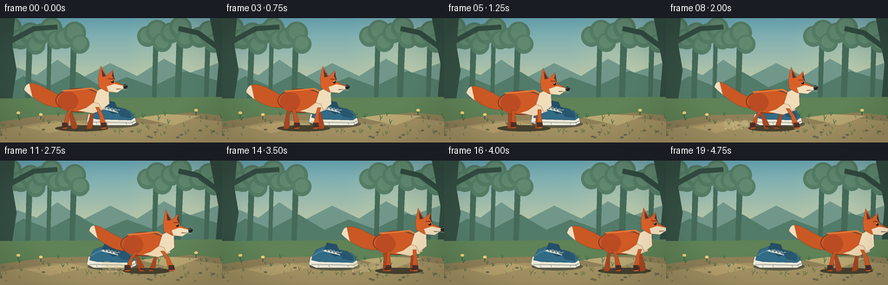
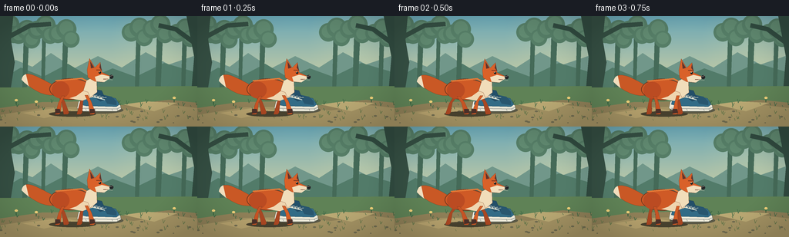

CODING AGENTS AS PIXEL WORLD MODELS
traex/GPT-5.6-Sol · dynamic_spatial_relationship_0027
点击播放 · 原生 RGB 像素
逐轮保存的候选
回放视频、检查图与代码变化。
每份候选均可单独播放。实际图片检查记录在下方工具轨迹中。
候选 01播放与检查图
点击播放 · 原生 RGB 像素


展开代码变化
--- 上一保存版本
+++ 本次保存版本
@@ -0,0 +1,221 @@
+from pathlib import Path
+import math
+import numpy as np
+from PIL import Image, ImageDraw, ImageFilter
+import artifact_io
+
+W,H,N = 256,144,20
+S=4
+rng=np.random.default_rng(27)
+
+def sc(v): return int(round(v*S))
+def pts(seq): return [(sc(x),sc(y)) for x,y in seq]
+def ellipse(d, box, fill, outline=None, width=1):
+ d.ellipse(tuple(sc(v) for v in box), fill=fill, outline=outline, width=sc(width) if outline else 1)
+def polygon(d, p, fill, outline=None): d.polygon(pts(p), fill=fill, outline=outline)
+def line(d,p,fill,width=1,joint='curve'): d.line(pts(p),fill=fill,width=sc(width),joint=joint)
+def rounded(d, box, r, fill, outline=None, width=1): d.rounded_rectangle(tuple(sc(v) for v in box), radius=sc(r), fill=fill, outline=outline, width=sc(width))
+
+def bezier(p0,p1,p2,p3,n=24):
+ out=[]
+ for t in np.linspace(0,1,n):
+ u=1-t
+ out.append((u**3*p0[0]+3*u*u*t*p1[0]+3*u*t*t*p2[0]+t**3*p3[0], u**3*p0[1]+3*u*u*t*p1[1]+3*u*t*t*p2[1]+t**3*p3[1]))
+ return out
+
+# deterministic scenic details
+far_trees=[(8,9,5),(31,16,7),(55,10,5),(82,15,7),(177,13,6),(204,9,8),(237,14,6)]
+grass=[(int(rng.integers(0,256)),int(rng.integers(113,137)),int(rng.integers(2,6))) for _ in range(75)]
+pebbles=[(int(rng.integers(0,256)),int(rng.integers(124,141)),int(rng.integers(1,3))) for _ in range(20)]
+
+def background():
+ # painted dawn woodland; supersampled gradient
+ hh,ww=H*S,W*S
+ y=np.arange(hh)[:,None]/(hh-1)
+ sky_top=np.array([105,166,181.]); sky_bottom=np.array([231,218,160.])
+ arr=np.empty((hh,ww,3),dtype=np.float32)
+ grad=np.minimum(y/0.78,1)[...,None]
+ arr[:]=sky_top*(1-grad)+sky_bottom*grad
+ # warm radial sun glow
+ yy,xx=np.mgrid[0:hh,0:ww]; cx,cy=sc(215),sc(31)
+ glow=np.clip(1-np.sqrt((xx-cx)**2+(yy-cy)**2)/sc(72),0,1)[...,None]
+ arr=arr*(1-.18*glow)+np.array([255,235,161])*0.18*glow
+ im=Image.fromarray(np.uint8(np.clip(arr,0,255)),'RGB')
+ d=ImageDraw.Draw(im)
+ # far misty hills
+ polygon(d,[(-5,74),(20,57),(42,66),(66,48),(96,68),(127,52),(158,67),(189,47),(219,63),(263,48),(263,105),(-5,105)],'#71978a')
+ polygon(d,[(-4,85),(27,67),(56,79),(88,62),(118,80),(146,68),(176,79),(213,61),(264,76),(264,111),(-4,111)],'#527b69')
+ # distant trunks and soft crowns
+ for x,top,w in far_trees:
+ polygon(d,[(x-w/3,100),(x,top),(x+w,top-2),(x+w/2,101)],'#456a58')
+ for ox,oy,r in [(-7,top+8,12),(4,top+2,13),(10,top+15,11)]:
+ ellipse(d,(x+ox-r,oy-r,x+ox+r,oy+r),'#557d66')
+ ellipse(d,(x+ox-r*.7,oy-r*.8,x+ox+r*.7,oy+r*.6),'#608970')
+ # large framing trunks
+ polygon(d,[(-8,0),(17,0),(14,31),(19,60),(13,99),(-7,112)],'#354f43')
+ line(d,[(11,27),(39,12),(66,10)],'#354f43',6)
+ polygon(d,[(242,0),(264,0),(264,107),(248,101),(252,53)],'#314b40')
+ line(d,[(251,34),(228,17),(206,12)],'#314b40',6)
+ # forest floor and path
+ polygon(d,[(-2,93),(258,91),(258,145),(-2,145)],'#5f8256')
+ polygon(d,[(-2,120),(54,112),(108,111),(161,116),(219,109),(258,113),(258,145),(-2,145)],'#8f8058')
+ polygon(d,[(-2,129),(60,119),(118,118),(173,123),(224,116),(258,120),(258,145),(-2,145)],'#a39263')
+ # sun patches
+ polygon(d,[(160,115),(190,111),(230,113),(200,124)],'#b9a873')
+ polygon(d,[(29,126),(78,119),(102,123),(57,133)],'#b5a16d')
+ # grasses
+ for x,gy,l in grass:
+ col='#3f6845' if gy<124 else '#68774b'
+ line(d,[(x,gy),(x-1,gy-l)],col,.7)
+ if l>3: line(d,[(x,gy),(x+2,gy-l+1)],col,.7)
+ for x,py,r in pebbles:
+ ellipse(d,(x-r,py-r/2,x+r,py+r/2),'#6f6b50')
+ # small flowers/mushrooms improve scale
+ for x,yc in [(21,115),(226,112),(47,117)]:
+ line(d,[(x,yc),(x,yc-5)],'#315e3d',1)
+ ellipse(d,(x-2,yc-7,x+2,yc-4),'#efcf78')
+ # soft vignette later
+ return im
+
+BASE=background()
+
+def draw_shoe(im):
+ d=ImageDraw.Draw(im)
+ # contact shadow (shoe is farther away than fox)
+ ellipse(d,(101,118,160,127),'#5b5946')
+ # white rubber sole, strongly sneaker-like
+ polygon(d,[(102,111),(113,109),(147,111),(156,116),(157,121),(151,124),(108,124),(100,120)],'#ece9d8','#283b42')
+ line(d,[(103,120),(151,121),(156,119)],'#a9aaa2',1.2)
+ # blue upper: heel at right and rounded toe left
+ polygon(d,[(104,111),(108,103),(119,99),(129,100),(137,105),(150,107),(155,115),(151,118),(112,117),(103,115)],'#326b86','#203c49')
+ polygon(d,[(132,102),(145,105),(151,111),(151,116),(139,114)],'#28566f')
+ # tongue
+ polygon(d,[(118,102),(121,95),(132,97),(137,109),(130,111)],'#234f69','#203c49')
+ # eyelet strip and laces
+ line(d,[(116,104),(136,109)],'#d8e4db',1.2)
+ for j in range(4):
+ x=119+j*4
+ ellipse(d,(x-1,103+j*1.0,x+1,105+j*1.0),'#e3dfc9')
+ line(d,[(x,104+j),(x+7,102+j+1)],'#e9e6d5',.8)
+ # toe highlight and sole grooves
+ line(d,[(105,110),(111,106),(117,104)],'#568ca1',1)
+ for x in [111,123,145,152]: line(d,[(x,121),(x+1,123)],'#8b918d',.7)
+
+
+def limb_poly(anchor, phase, front=True, crouch=0):
+ ax,ay=anchor
+ # legs alternate with smooth readable running poses
+ swing=math.sin(phase)
+ knee_x=ax + swing*7
+ knee_y=ay+8-crouch*.2
+ foot_x=ax + swing*12
+ foot_y=126-crouch*.15
+ width=4.2 if front else 4.8
+ return [(ax-width/2,ay),(ax+width/2,ay),(knee_x+2,knee_y),(foot_x+4,foot_y),
+ (foot_x+2,foot_y+2),(foot_x-3,foot_y+2),(knee_x-2,knee_y+1)]
+
+def draw_fox(im,cx,frame,running,crouch=0):
+ d=ImageDraw.Draw(im)
+ # gait and vertical bounce
+ cycle=(frame-5)*1.75
+ bob=(abs(math.sin(cycle))*1.7 if running else math.sin(frame*.7)*.45)+crouch
+ cy=96+bob
+ # fox ground shadow (closer/larger)
+ shadow_w=61 if not running else 55
+ ellipse(d,(cx-shadow_w/2,124,cx+shadow_w/2,131),(71,65,46))
+ # tail behind body, organic curved silhouette
+ wave=math.sin(frame*.55)*2.2
+ if running: wave += math.sin(cycle)*3
+ p0=(cx-24,cy-6); p1=(cx-43,cy-15-wave); p2=(cx-63,cy-30+wave); p3=(cx-66,cy-13+wave)
+ upper=bezier(p0,p1,p2,p3,20)
+ q0=(cx-65,cy-12+wave); q1=(cx-51,cy+1+wave); q2=(cx-35,cy+10); q3=(cx-20,cy+6)
+ lower=bezier(q0,q1,q2,q3,20)
+ polygon(d,upper+lower,'#c95825','#713820')
+ # cream tail tip
+ tip=[upper[-1],upper[-2],upper[-3],upper[-4],upper[-5],upper[-6],
+ (cx-57,cy-5+wave),(cx-62,cy-9+wave)]+lower[:5]
+ polygon(d,tip,'#f2dfbf')
+ # rear-side legs first
+ phase1=cycle
+ phase2=cycle+math.pi
+ polygon(d,limb_poly((cx-16,cy+8),phase2,False,crouch),'#a94722','#713820')
+ polygon(d,limb_poly((cx+16,cy+7),phase1,False,crouch),'#a94722','#713820')
+ # dark socks and feet hinted by overlaid strokes
+ if running:
+ for ax,ph in [(cx-16,phase2),(cx+16,phase1)]:
+ sw=math.sin(ph); fx=ax+sw*12
+ line(d,[(fx-2,125-crouch*.15),(fx+4,126-crouch*.15)],'#4b3028',2.2)
+ # torso, shoulder and haunch
+ ellipse(d,(cx-30,cy-15,cx+25,cy+13),'#cf5a26','#713820')
+ ellipse(d,(cx-27,cy-11,cx-4,cy+11),'#bb4b22')
+ # warm dorsal highlight
+ line(d,[(cx-22,cy-12),(cx+12,cy-15),(cx+23,cy-9)],'#e47a38',2)
+ # cream belly/chest
+ polygon(d,[(cx+5,cy+8),(cx+23,cy-5),(cx+27,cy+9),(cx+13,cy+14),(cx-4,cy+11)],'#efd6b0')
+ # near legs on top
+ polygon(d,limb_poly((cx-12,cy+8),phase1,True,crouch),'#c65324','#713820')
+ polygon(d,limb_poly((cx+18,cy+7),phase2,True,crouch),'#d35d27','#713820')
+ # black socks and paws, emphasizing gait
+ for ax,ph in [(cx-12,phase1),(cx+18,phase2)]:
+ sw=math.sin(ph); fx=ax+sw*12
+ polygon(d,[(fx-3,121-crouch*.15),(fx+3,121-crouch*.15),(fx+4,126-crouch*.15),(fx-3,127-crouch*.15)],'#4a3029')
+ # neck ruff
+ polygon(d,[(cx+18,cy-12),(cx+31,cy-19),(cx+32,cy+3),(cx+23,cy+10),(cx+20,cy+3),(cx+14,cy+1)],'#f1ddba','#713820')
+ # head, long side profile facing right
+ hx,hy=cx+27,cy-19
+ polygon(d,[(hx-8,hy-7),(hx-5,hy-22),(hx+2,hy-10),(hx+9,hy-17),(hx+11,hy-4),
+ (hx+24,hy+2),(hx+13,hy+9),(hx+2,hy+8),(hx-7,hy+3)],'#d96129','#713820')
+ # inner ears
+ polygon(d,[(hx-3,hy-9),(hx-4,hy-18),(hx+1,hy-10)],'#5d352e')
+ polygon(d,[(hx+8,hy-10),(hx+9,hy-15),(hx+11,hy-6)],'#5d352e')
+ # cheek and muzzle
+ polygon(d,[(hx+2,hy+2),(hx+11,hy-1),(hx+24,hy+2),(hx+14,hy+9),(hx+4,hy+8)],'#f2dfbd')
+ # nose, eye, brow
+ ellipse(d,(hx+21,hy-.5,hx+26,hy+4.5),'#252628')
+ ellipse(d,(hx+7,hy-5,hx+10,hy-2),'#171c1b')
+ ellipse(d,(hx+7.6,hy-4.8,hx+8.4,hy-4),'#fff2ca')
+ line(d,[(hx+4,hy-7),(hx+11,hy-7)],'#78351f',1)
+ # smile line and whiskers
+ line(d,[(hx+13,hy+5),(hx+19,hy+5)],'#704032',.7)
+ line(d,[(hx+17,hy+3),(hx+25,hy)],'#eadfc5',.55)
+ line(d,[(hx+17,hy+5),(hx+25,hy+6)],'#eadfc5',.55)
+
+
+def add_dust(im,frame,cx):
+ if frame<6 or frame>15: return
+ d=ImageDraw.Draw(im,'RGBA')
+ age=frame-6
+ # puffs trail behind paws, placed below shoe silhouette
+ for k in range(4):
+ px=cx-24-k*8+math.sin(frame+k)*2
+ py=124-k%2*2
+ r=3.5+k*.8
+ ellipse(d,(px-r,py-r,px+r,py+r),(213,195,143,max(30,125-k*20)))
+ for k in range(5):
+ x=cx-18-k*9
+ ellipse(d,(x,127+(k%2),x+1.4,128.4+(k%2)),(238,218,164,150))
+
+
+def vignette(im):
+ a=np.asarray(im).astype(np.float32)
+ yy,xx=np.mgrid[0:H*S,0:W*S]
+ nx=(xx-W*S/2)/(W*S/2); ny=(yy-H*S/2)/(H*S/2)
+ v=np.clip((nx*nx+ny*ny-.55)*.13,0,.14)[...,None]
+ a*=1-v
+ return Image.fromarray(np.uint8(np.clip(a,0,255)))
+
+# Positions: visible depth overlap at first, clear motion to right, settle right of shoe.
+pos=[94,94,95,94,94,92,99,109,122,137,153,169,184,196,204,207,208,208,208,208]
+frames=[]
+for i,cx in enumerate(pos):
+ im=BASE.copy()
+ draw_shoe(im) # shoe behind: initial fox visibly occludes it
+ running=6<=i<=15
+ crouch=3.0 if i==5 else (1.5 if i==6 else 0)
+ add_dust(im,i,cx)
+ draw_fox(im,cx,i,running,crouch)
+ im=vignette(im)
+ im=im.resize((W,H),Image.Resampling.LANCZOS)
+ frames.append(np.asarray(im.convert('RGB'),dtype=np.uint8))
+frames=np.stack(frames)
+artifact_io.save(frames,Path(__file__).resolve().parent)
可观测工具轨迹
实际执行的命令与返回图片。
命令 1exit 0
/bin/bash -lc "cat prompt.txt && printf '\\n---RULES---\\n' && cat GENERATION_RULES.md && printf '\\n---SPEC---\\n' && cat task_spec.json"
命令 2exit 0
/bin/bash -lc "find . -maxdepth 2 -type f -printf '%p\\n' | sort && printf '\\nTOOLS\\n' && command -v ffmpeg || true && command -v python3 || true"
命令 3exit 0
/bin/bash -lc 'cat artifact_io.py'
命令 4exit 0
/bin/bash -lc "cat > generate.py <<'PY'
from pathlib import Path
import math
import numpy as np
from PIL import Image, ImageDraw, ImageFilter
import artifact_io
W,H,N = 256,144,20
S=4
rng=np.random.default_rng(27)
def sc(v): return int(round(v*S))
def pts(seq): return [(sc(x),sc(y)) for x,y in seq]
def ellipse(d, box, fill, outline=None, width=1):
d.ellipse(tuple(sc(v) for v in box), fill=fill, outline=outline, width=sc(width) if outline else 1)
def polygon(d, p, fill, outline=None): d.polygon(pts(p), fill=fill, outline=outline)
def line(d,p,fill,width=1,joint='curve'): d.line(pts(p),fill=fill,width=sc(width),joint=joint)
def rounded(d, box, r, fill, outline=None, width=1): d.rounded_rectangle(tuple(sc(v) for v in box), radius=sc(r), fill=fill, outline=outline, width=sc(width))
def bezier(p0,p1,p2,p3,n=24):
out=[]
for t in np.linspace(0,1,n):
u=1-t
out.append((u**3*p0[0]+3*u*u*t*p1[0]+3*u*t*t*p2[0]+t**3*p3[0], u**3*p0[1]+3*u*u*t*p1[1]+3*u*t*t*p2[1]+t**3*p3[1]))
return out
# deterministic scenic details
far_trees=[(8,9,5),(31,16,7),(55,10,5),(82,15,7),(177,13,6),(204,9,8),(237,14,6)]
grass=[(int(rng.integers(0,256)),int(rng.integers(113,137)),int(rng.integers(2,6))) for _ in range(75)]
pebbles=[(int(rng.integers(0,256)),int(rng.integers(124,141)),int(rng.integers(1,3))) for _ in range(20)]
def background():
# painted dawn woodland; supersampled gradient
hh,ww=H*S,W*S
y=np.arange(hh)[:,None]/(hh-1)
sky_top=np.array([105,166,181.]); sky_bottom=np.array([231,218,160.])
arr=np.empty((hh,ww,3),dtype=np.float32)
grad=np.minimum(y/0.78,1)[...,None]
arr[:]=sky_top*(1-grad)+sky_bottom*grad
# warm radial sun glow
yy,xx=np.mgrid[0:hh,0:ww]; cx,cy=sc(215),sc(31)
glow=np.clip(1-np.sqrt((xx-cx)**2+(yy-cy)**2)/sc(72),0,1)[...,None]
arr=arr*(1-.18*glow)+np.array([255,235,161])*0.18*glow
im=Image.fromarray(np.uint8(np.clip(arr,0,255)),'RGB')
d=ImageDraw.Draw(im)
# far misty hills
polygon(d,[(-5,74),(20,57),(42,66),(66,48),(96,68),(127,52),(158,67),(189,47),(219,63),(263,48),(263,105),(-5,105)],'#71978a')
polygon(d,[(-4,85),(27,67),(56,79),(88,62),(118,80),(146,68),(176,79),(213,61),(264,76),(264,111),(-4,111)],'#527b69')
# distant trunks and soft crowns
for x,top,w in far_trees:
polygon(d,[(x-w/3,100),(x,top),(x+w,top-2),(x+w/2,101)],'#456a58')
for ox,oy,r in [(-7,top+8,12),(4,top+2,13),(10,top+15,11)]:
ellipse(d,(x+ox-r,oy-r,x+ox+r,oy+r),'#557d66')
ellipse(d,(x+ox-r*.7,oy-r*.8,x+ox+r*.7,oy+r*.6),'#608970')
# large framing trunks
polygon(d,[(-8,0),(17,0),(14,31),(19,60),(13,99),(-7,112)],'#354f43')
line(d,[(11,27),(39,12),(66,10)],'#354f43',6)
polygon(d,[(242,0),(264,0),(264,107),(248,101),(252,53)],'#314b40')
line(d,[(251,34),(228,17),(206,12)],'#314b40',6)
# forest floor and path
polygon(d,[(-2,93),(258,91),(258,145),(-2,145)],'#5f8256')
polygon(d,[(-2,120),(54,112),(108,111),(161,116),(219,109),(258,113),(258,145),(-2,145)],'#8f8058')
polygon(d,[(-2,129),(60,119),(118,118),(173,123),(224,116),(258,120),(258,145),(-2,145)],'#a39263')
# sun patches
polygon(d,[(160,115),(190,111),(230,113),(200,124)],'#b9a873')
polygon(d,[(29,126),(78,119),(102,123),(57,133)],'#b5a16d')
# grasses
for x,gy,l in grass:
col='#3f6845' if gy<124 else '#68774b'
line(d,[(x,gy),(x-1,gy-l)],col,.7)
if l>3: line(d,[(x,gy),(x+2,gy-l+1)],col,.7)
for x,py,r in pebbles:
ellipse(d,(x-r,py-r/2,x+r,py+r/2),'#6f6b50')
# small flowers/mushrooms improve scale
for x,yc in [(21,115),(226,112),(47,117)]:
line(d,[(x,yc),(x,yc-5)],'#315e3d',1)
ellipse(d,(x-2,yc-7,x+2,yc-4),'#efcf78')
# soft vignette later
return im
BASE=background()
def draw_shoe(im):
d=ImageDraw.Draw(im)
# contact shadow (shoe is farther away than fox)
ellipse(d,(101,118,160,127),'#5b5946')
# white rubber sole, strongly sneaker-like
polygon(d,[(102,111),(113,109),(147,111),(156,116),(157,121),(151,124),(108,124),(100,120)],'#ece9d8','#283b42')
line(d,[(103,120),(151,121),(156,119)],'#a9aaa2',1.2)
# blue upper: heel at right and rounded toe left
polygon(d,[(104,111),(108,103),(119,99),(129,100),(137,105),(150,107),(155,115),(151,118),(112,117),(103,115)],'#326b86','#203c49')
polygon(d,[(132,102),(145,105),(151,111),(151,116),(139,114)],'#28566f')
# tongue
polygon(d,[(118,102),(121,95),(132,97),(137,109),(130,111)],'#234f69','#203c49')
# eyelet strip and laces
line(d,[(116,104),(136,109)],'#d8e4db',1.2)
for j in range(4):
x=119+j*4
ellipse(d,(x-1,103+j*1.0,x+1,105+j*1.0),'#e3dfc9')
line(d,[(x,104+j),(x+7,102+j+1)],'#e9e6d5',.8)
# toe highlight and sole grooves
line(d,[(105,110),(111,106),(117,104)],'#568ca1',1)
for x in [111,123,145,152]: line(d,[(x,121),(x+1,123)],'#8b918d',.7)
def limb_poly(anchor, phase, front=True, crouch=0):
ax,ay=anchor
# legs alternate with smooth readable running poses
swing=math.sin(phase)
knee_x=ax + swing*7
knee_y=ay+8-crouch*.2
foot_x=ax + swing*12
foot_y=126-crouch*.15
width=4.2 if front else 4.8
return [(ax-width/2,ay),(ax+width/2,ay),(knee_x+2,knee_y),(foot_x+4,foot_y),
(foot_x+2,foot_y+2),(foot_x-3,foot_y+2),(knee_x-2,knee_y+1)]
def draw_fox(im,cx,frame,running,crouch=0):
d=ImageDraw.Draw(im)
# gait and vertical bounce
cycle=(frame-5)*1.75
bob=(abs(math.sin(cycle))*1.7 if running else math.sin(frame*.7)*.45)+crouch
cy=96+bob
# fox ground shadow (closer/larger)
shadow_w=61 if not running else 55
ellipse(d,(cx-shadow_w/2,124,cx+shadow_w/2,131),(71,65,46))
# tail behind body, organic curved silhouette
wave=math.sin(frame*.55)*2.2
if running: wave += math.sin(cycle)*3
p0=(cx-24,cy-6); p1=(cx-43,cy-15-wave); p2=(cx-63,cy-30+wave); p3=(cx-66,cy-13+wave)
upper=bezier(p0,p1,p2,p3,20)
q0=(cx-65,cy-12+wave); q1=(cx-51,cy+1+wave); q2=(cx-35,cy+10); q3=(cx-20,cy+6)
lower=bezier(q0,q1,q2,q3,20)
polygon(d,upper+lower,'#c95825','#713820')
# cream tail tip
tip=[upper[-1],upper[-2],upper[-3],upper[-4],upper[-5],upper[-6],
(cx-57,cy-5+wave),(cx-62,cy-9+wave)]+lower[:5]
polygon(d,tip,'#f2dfbf')
# rear-side legs first
phase1=cycle
phase2=cycle+math.pi
polygon(d,limb_poly((cx-16,cy+8),phase2,False,crouch),'#a94722','#713820')
polygon(d,limb_poly((cx+16,cy+7),phase1,False,crouch),'#a94722','#713820')
# dark socks and feet hinted by overlaid strokes
if running:
for ax,ph in [(cx-16,phase2),(cx+16,phase1)]:
sw=math.sin(ph); fx=ax+sw*12
line(d,[(fx-2,125-crouch*.15),(fx+4,126-crouch*.15)],'#4b3028',2.2)
# torso, shoulder and haunch
ellipse(d,(cx-30,cy-15,cx+25,cy+13),'#cf5a26','#713820')
ellipse(d,(cx-27,cy-11,cx-4,cy+11),'#bb4b22')
# warm dorsal highlight
line(d,[(cx-22,cy-12),(cx+12,cy-15),(cx+23,cy-9)],'#e47a38',2)
# cream belly/chest
polygon(d,[(cx+5,cy+8),(cx+23,cy-5),(cx+27,cy+9),(cx+13,cy+14),(cx-4,cy+11)],'#efd6b0')
# near legs on top
polygon(d,limb_poly((cx-12,cy+8),phase1,True,crouch),'#c65324','#713820')
polygon(d,limb_poly((cx+18,cy+7),phase2,True,crouch),'#d35d27','#713820')
# black socks and paws, emphasizing gait
for ax,ph in [(cx-12,phase1),(cx+18,phase2)]:
sw=math.sin(ph); fx=ax+sw*12
polygon(d,[(fx-3,121-crouch*.15),(fx+3,121-crouch*.15),(fx+4,126-crouch*.15),(fx-3,127-crouch*.15)],'#4a3029')
# neck ruff
polygon(d,[(cx+18,cy-12),(cx+31,cy-19),(cx+32,cy+3),(cx+23,cy+10),(cx+20,cy+3),(cx+14,cy+1)],'#f1ddba','#713820')
# head, long side profile facing right
hx,hy=cx+27,cy-19
polygon(d,[(hx-8,hy-7),(hx-5,hy-22),(hx+2,hy-10),(hx+9,hy-17),(hx+11,hy-4),
(hx+24,hy+2),(hx+13,hy+9),(hx+2,hy+8),(hx-7,hy+3)],'#d96129','#713820')
# inner ears
polygon(d,[(hx-3,hy-9),(hx-4,hy-18),(hx+1,hy-10)],'#5d352e')
polygon(d,[(hx+8,hy-10),(hx+9,hy-15),(hx+11,hy-6)],'#5d352e')
# cheek and muzzle
polygon(d,[(hx+2,hy+2),(hx+11,hy-1),(hx+24,hy+2),(hx+14,hy+9),(hx+4,hy+8)],'#f2dfbd')
# nose, eye, brow
ellipse(d,(hx+21,hy-.5,hx+26,hy+4.5),'#252628')
ellipse(d,(hx+7,hy-5,hx+10,hy-2),'#171c1b')
ellipse(d,(hx+7.6,hy-4.8,hx+8.4,hy-4),'#fff2ca')
line(d,[(hx+4,hy-7),(hx+11,hy-7)],'#78351f',1)
# smile line and whiskers
line(d,[(hx+13,hy+5),(hx+19,hy+5)],'#704032',.7)
line(d,[(hx+17,hy+3),(hx+25,hy)],'#eadfc5',.55)
line(d,[(hx+17,hy+5),(hx+25,hy+6)],'#eadfc5',.55)
def add_dust(im,frame,cx):
if frame<6 or frame>15: return
d=ImageDraw.Draw(im,'RGBA')
age=frame-6
# puffs trail behind paws, placed below shoe silhouette
for k in range(4):
px=cx-24-k*8+math.sin(frame+k)*2
py=124-k%2*2
r=3.5+k*.8
ellipse(d,(px-r,py-r,px+r,py+r),(213,195,143,max(30,125-k*20)))
for k in range(5):
x=cx-18-k*9
ellipse(d,(x,127+(k%2),x+1.4,128.4+(k%2)),(238,218,164,150))
def vignette(im):
a=np.asarray(im).astype(np.float32)
yy,xx=np.mgrid[0:H*S,0:W*S]
nx=(xx-W*S/2)/(W*S/2); ny=(yy-H*S/2)/(H*S/2)
v=np.clip((nx*nx+ny*ny-.55)*.13,0,.14)[...,None]
a*=1-v
return Image.fromarray(np.uint8(np.clip(a,0,255)))
# Positions: visible depth overlap at first, clear motion to right, settle right of shoe.
pos=[94,94,95,94,94,92,99,109,122,137,153,169,184,196,204,207,208,208,208,208]
frames=[]
for i,cx in enumerate(pos):
im=BASE.copy()
draw_shoe(im) # shoe behind: initial fox visibly occludes it
running=6<=i<=15
crouch=3.0 if i==5 else (1.5 if i==6 else 0)
add_dust(im,i,cx)
draw_fox(im,cx,i,running,crouch)
im=vignette(im)
im=im.resize((W,H),Image.Resampling.LANCZOS)
frames.append(np.asarray(im.convert('RGB'),dtype=np.uint8))
frames=np.stack(frames)
artifact_io.save(frames,Path(__file__).resolve().parent)
PY
python3 generate.py
ls -lh pixels.npz inspection.png index.html frames/00.png frames/19.png"命令 5exit 0
/bin/bash -lc "python3 - <<'PY'
import numpy as np
from PIL import Image
z=np.load('pixels.npz')['pixels']
print('packed tensor',z.shape,z.dtype)
fs=np.stack([np.array(Image.open(f'frames/{i:02d}.png')) for i in range(20)])
print('frames',fs.shape,fs.dtype,fs.min(),fs.max())
print('mean frame-to-frame changed pixels',np.mean(np.any(fs[1:]"'!=fs[:-1],axis=3),axis=(1,2)).round(3).tolist())
print('"'unique checksums',len({x.tobytes() for x in fs}))
PY
python3 generate.py >/tmp/regenerate.log 2>&1 && tail -5 /tmp/regenerate.log
git status --short"保存候选 1 份；完成命令 5 次；可验证图片返回 0 张。原始 API 响应与完整日志保留在本地。